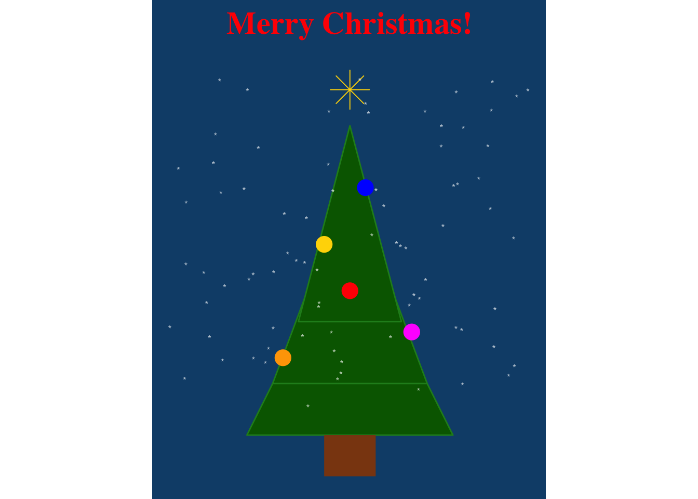

project:
type: website
# вот эту строчку надо дописать
output-dir: docs8 Презентация исследования
В предыдущих уроках вы научились многому из того, что нужно исследователю-филологу:
В этом уроке пришло время обобщить ваши знания и опубликовать свое первое количественное исследование. Мы сделаем это при помощи публикационной системы Quarto и сервиса GitHub Pages.
8.1 Сайт Quarto
Работать с маркдауном мы будем, используя издательскую систему Quarto с открытым исходным кодом. Она позволяет создавать и публиковать статьи, презентации, информационные панели, веб-сайты, блоги и книги в HTML, PDF, MS Word, ePub и других форматах.
Подробнее см. практическое руководство “Quarto: The Definitive Guide”, а также https://quarto.org/docs/websites/.
Создайте проект Quarto под контролем версий. В меню идем File -> New Project -> New Directory -> Quarto Website. Поставьте галочку, чтобы проект был под контролем версий.
 У вашего сайта пока всего две страницы, About и Home. Загляните в файл
У вашего сайта пока всего две страницы, About и Home. Загляните в файл _quarto.yml, чтобы в этом убедиться. Также отредактируйте файл _quarto.yml, указав путь для рендеринга html-файлов.
Чтобы получить html, надо выполнить команду:
library(quarto)
quarto::quarto_render()После выполнения команды загляните в docs, чтобы убедить, что там лежат файлы html. Вы можете открыть их в любом браузере. Они пока пустоваты (но мы чуть позже их заполним).
8.2 Репозиторий GitHub
Вы уже умеете работать под контролем версий. Если забыли, загляните в урок 1.
Сейчас нам надо связать наш проект с новым репозиторием.
Для этого идете на GitHub, создатете публичный репозиторий и следуете инструкции.
 Выполняйте код в терминале построчно. Также git попросит вас выполнить следующую команду:
Выполняйте код в терминале построчно. Также git попросит вас выполнить следующую команду: git push --set-upstream origin main.
Для начала можете закоммитить сайт. После этого идем на GitHub, обновляем страницу репозитория, а затем и включаем Pages, указав, что наш сайт будет рендериться из папки docs.
 Нажимаем
Нажимаем Save и ждем несколько минут. В результате вы увидите нечто такое:

Сохраните ссылку на сайт в описании репозитория, чтобы не искать каждый раз.

8.2.1 ⭐ Контроль (2 балла)
8.3 Редактируем YAML
YAML (с расширением .yml) — это формат, используемый для конфигурационных файлов и хранения структурированных данных, отличающийся более простым синтаксисом на основе отступов.
К основным параметрам документа относятся format, title, subtitle, date, date-format, author, abstract, lang, toc, number-sections и другие.
Список готовых тем для оформления: https://quarto.org/docs/output-formats/html-themes.html
project:
type: website
output-dir: docs
website:
title: "Мой великолепный проект"
navbar:
search: true
left:
- href: index.qmd
text: Текст
- href: about.qmd
text: О проекте
format:
html:
theme:
- journal
fontsize: "14pt"Для просмотра изменений в терминале введите quarto preview.
8.3.1 ⭐ Контроль (2 балла)
8.4 Markdown
Markdown – это облегчённый язык разметки. Он позволяет создавать документы разного формата – не только HTML (веб-страницы), но и PDF и Word. Markdown дает возможность создания полностью воспроизводимых документов, сочетающих код и поясняющий текст. Этот язык используется для создания сайтов, статей, книг, презентаций, отчетов, дашбордов и т.п. Этот курс написан с использованием Markdown.
Язык Markdown можно использовать в файлах с раширением .qmd или .rmd. Два таких файла были автоматически добавлены при создании проекта. Можно добавить новые или переменовать те, что есть. Не забывайте прописать новые файлы в _quarto.yml.
file.rename("about.qmd", "analysis.qmd")8.4.1 ⭐ Контроль (1 балл)
8.4.2 Заголовки
Заголовки разного уровня задаются при помощи решетки:
# Заголовок первого уровня
## Заголовок второго уровня
### Заголовок третьего уровня
#### Заголовок четвёртого уровняПример заголовка третьего уровня:
8.4.3 Форматирование
*курсив*
_курсив_
**полужирный**
__полужирный__
***полужирный курсив***
___полужирный курсив___
~~зачеркнутый~~
<mark>выделение</mark>Пример:
курсив
полужирный
уж и не знаю как выделить
зачеркнутый
выделение
8.4.4 Списки
Нумерованный список
1. Пункт первый
2. Пункт второй
3. Пункт третийПример:
- Пункт первый
- Пункт второй
- Пункт третий
Маркированный список
- Пункт первый
- Пункт второй
- Пункт третийПример:
- Пункт первый
- Пункт второй
- Пункт третий
Также Markdown позволяет делать вложенные списки:
1. Пункт первый
- Подпункт первый
- Подпункт второй
2. Пункт второйПример:
- Пункт первый
- Подпункт первый
- Подпункт второй
- Пункт второй
Самое удобное, что элементы списка не обязательно нумеровать:
(@) Пункт первый.
(@) Пункт не знаю какой.- Пункт первый.
- Пункт не знаю какой.
8.4.5 Ссылки
[Текст ссылки](http://antibarbari.ru/)Пример:
8.4.6 Изображения
Пример:

Изображения можно вставлять, пользуясь непосредственно разметкой html.
<img src="images/my_image.jpg" width=40%>8.4.7 Блоки кода
Можно вставлять непосредственно в текст; для этого код выделяют одинарным обратным апострофом (грависом). Но чаще код дают отдельным блоком. Эти блоки можно именовать; тогда в случае ошибки будет сразу понятно, где она случилась.
```{}
some code here
```В фигурных скобках надо указать язык, например {r}, только в этом случае код будет подсвечиваться и выполняться.
Там же в фигурных скобках можно задать следующие параметры:
eval = FALSEкод будет показан, но не будет выполняться;include = FALSEкод будет выполнен, но ни код, ни результат не будут показаны;echo = FALSEкод будет выполнен, но не показан, результаты при этом видны;message = FALSEилиwarning = FALSEпрячет сообщения или предупреждения;results = 'hide'не распечатывает результат, аfig.show = 'hide'прячет графики;error = TRUE“сшивание” продолжается, даже если этот блок вернул ошибку.
8.4.8 Цитаты
> Omnia praeclara rara.Пример:
Omnia praeclara rara.
Цитата с подписью может быть оформлена так:
> Omnia praeclara rara.
>
> --- CiceroПример:
Omnia praeclara rara.
— Cicero
8.4.9 Чек-листы
- [x] Таблицы
- [ ] ГрафикиПример:
8.4.10 Графики
Markdown позволяет встраивать любые графики.
library(ggplot2)Warning: package 'ggplot2' was built under R version 4.5.2# Координаты для "ёлки" (три треугольника)
tree <- data.frame(
x = c(-2, 0, 2, -1.5, 0, 1.5, -1, 0, 1),
y = c(0, 4, 0, 1, 5, 1, 2.2, 6, 2.2),
group = rep(1:3, each=3)
)
# Координаты ствола
trunk <- data.frame(
x = c(-0.5, -0.5, 0.5, 0.5),
y = c(0, -0.8, -0.8, 0)
)
# Снежинки
set.seed(123)
snow <- data.frame(
x = runif(80, -3.5, 3.5),
y = runif(80, 0.5, 7)
)
ggplot() +
# Ёлка
geom_polygon(data=tree, aes(x=x, y=y, group=group), fill="darkgreen", color="forestgreen") +
# Ствол
geom_polygon(data=trunk, aes(x=x, y=y), fill="saddlebrown") +
# "Звезда" (точка)
geom_point(aes(x=0, y=6.7), color="gold", size=9, shape=8) +
# Снежинки
geom_point(data=snow, aes(x=x, y=y), color="white", size=2, alpha=0.7, shape=42) +
# Поздравительный текст
annotate("text", x=0, y=8, label="Merry Christmas!", family="serif", color="red", size=8, fontface="bold") +
# Украшения на ёлке (игрушки)
geom_point(aes(x = c(0, -0.5, 0.3, -1.3, 1.2),
y = c(2.8, 3.7, 4.8, 1.5, 2)),
color = c("red", "gold", "blue", "orange", "magenta"), size = 5) +
# Внешний вид
coord_fixed() +
theme_void() +
theme(plot.background = element_rect(fill="#114D78", color=NA))
8.4.11 ⭐ Контроль (4 балла)
8.5 Библиография
Markdown позволяет добавлять библиографию в формате BibTeX. BibTeX — программное обеспечение для создания форматированных списков библиографии; обычно используется совместно с LaTeX’ом. Многие сайты, например GoogleScholar, позволяют экспортировать библиографические записи в формате BibTeX. При необходимости запись можно исправить вручную.
Каждая запись имеет следующую форму.
@book{winter2020,
author = {Bodo Winter},
title = "{Statistics for Linguists: An Introduction Using R}",
year = {2020},
publisher = {Routledge}
}Здесь book — тип записи («книга»), winter2020 — метка-идентификатор записи, дальше список полей со значениями.
Одна запись описывает ровно одну публикацию статью, книгу, диссертацию, и т. д. Подробнее о типах записей можно посмотреть вот здесь.
Подобные записи хранятся в текстовом файле с расширением .bib. Чтобы привязать библиографию, нужно указать имя файла в файле yml.
---
bibliography: bibliography.bib
---Дальше, чтобы добавить ссылку, достаточно ввести ключ публикации после @ (в квадратных скобках, чтобы публикация отражалась в круглых): [@wickham2016].
Пример:
Можно интегрировать BibTex с Zotero или другим менеджером библиографии. Для этого придется установить специальное расширение.
Чтобы изменить стиль цитирования, необходимо добавить в шапку yaml название csl-файла (CSL - Citation Style Language), например:
---
output: html_document
bibliography: references.bib
csl: archiv-fur-geschichte-der-philosophie.csl
---Найти необходимый csl-файл можно, например, в репозитории стилей Zotero.
8.5.1 ⭐ Контроль (1 балл)
Wickham, Hadley, и Garrett Grolemund. 2016. R for Data Science. O’Reilly. https://r4ds.had.co.nz/index.html.